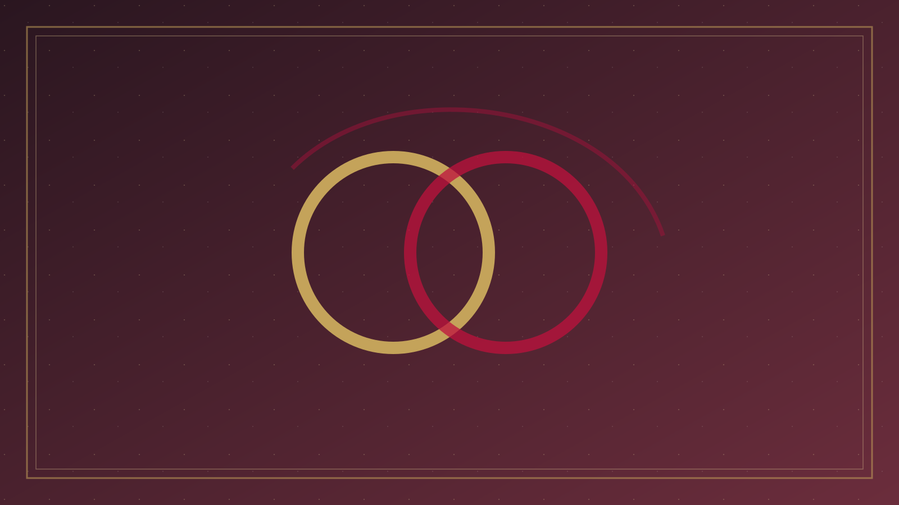

分題 01 / 08
問題意識
一、問題意識
討論婚姻，不能從當代的情感契約出發，也不能從某種文化裡的父權秩序出發，然後把聖經當作裝飾。聖經把婚姻放在創造與救贖歷史之中：它是神在起初所看為好的秩序，被墮落扭曲，被律法約束，被先知用來述說神與子民的盟約，被耶穌從「起初」重新解釋，被保羅連於基督與教會的奧祕，又在復活與新天新地裡被相對化——地上的婚姻指向更大的聯合，卻不是終極本身。
因此，至少有兩條路必須同時拒絕。第一條路，是把婚姻化約為雙方合意的文化合約：只要兩情相悅、程序合法，內容便可以由浪漫自主重新定義。第二條路，是把婚姻偶像化：彷彿成家才算完整、離婚便失去救恩、單身是虧欠。經文兩端都有張力。婚姻不是得救的條件（林前 7:7–8；太 19:12）；婚姻也不是人可以隨意拆開的私人計劃（太 19:6）。這兩句必須一起讀。
方法上，我們以經解經：讓創世記解釋耶穌，讓耶穌解釋申命記，讓以弗所書解釋創世記的「一體」，又讓啟示錄提醒我們不要把地上的家室當成終局。敘事中的多妻、休妻、不忠，首先是墮落世界的描述，不是創造的規範理想。家庭法規裡的讓步，不能壓過「起初並不是這樣」（太 19:8）。